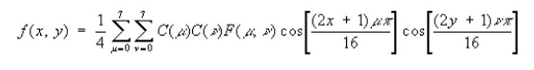
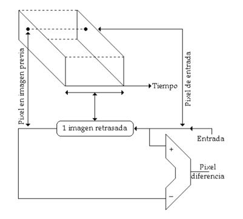
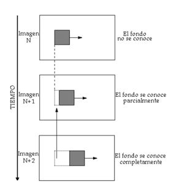
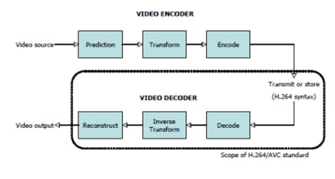

H.264 o MPEG-4 AVC (Advanced Video Coding) es un formato de codificación de vídeo para grabar y distribuir
señales de vídeo FullHD y audio. Fue desarrollado y mantenido por el ITU-T Video Coding Experts Group (VCEG)
con el ISO/IEC JTC1 Moving Picture Experts Group (MPEG).
El estándar H.264/AVC fue desarrollado a lo largo de 4 años, originalmente como el proyecto H.26L del VCEG en
1998 y luego como parte de MPEG-4 parte 2, con el trabajo del comité conjunto JVT. Fue concluido en 2003.
Este estándar es conocido por seis nombres diferentes, aunque AVC y H.264 son los más comunes.
Estos métodos de compresión, recurren a los procedimientos generales de compresión de datos, aprovechando
además la redundancia espacial de una imagen (áreas uniformes), la correlación entre puntos cercanos y la
menor sensibilidad del ojo a los detalles finos de las imágenes fijas (JPEG) y, para imágenes animadas
(MPEG), se saca provecho también de la redundancia temporal entre imágenes sucesivas.
Cuando las imágenes individuales son comprimidas sin referencia a las demás, el eje del tiempo no entra en el
proceso de compresión, esto por lo tanto se denomina codificación intra (intra=dentro) o codificación
espacial.
La Transformada Discreta del Coseno se usa en MPEG para determinar el dominio de la frecuencia espacial en
imágenes bidimensionales.

La codificación inter aprovecha la ventaja que existe cuando las imágenes sucesivas son similares. En lugar
de enviar la información de cada imagen por separado, el codificador inter envía la diferencia existente
entre la imagen previa y la actual en forma de codificación diferencial. El codificador necesita de una
imagen, la cual fue almacenada con anterioridad para luego ser comparada entre imágenes sucesivas y de forma
similar se requiere de una imagen previamente almacenada para que el decodificador desarrolle las imágenes
siguientes.

Cuando un objeto se mueve, este oculta lo que hay detrás de él, pero esto va cambiando a medida que se va
moviendo, permitiendo observar el fondo. El revelado del fondo exige nuevos datos a ser transmitidos, ya que
el área del fondo había sido ocultada anteriormente y la información no pudo ser obtenida desde una imagen
previa.

El estándar H.264/AVC especifica el formato de la información codificada y el proceso de decodificación de la
información, pero no determina un algoritmo de codificación específico.
El diseño y la implementación de codificadores H.264/AVC fue simplificada, gracias a varias de las
características mencionadas anteriormente.
La capa de codificación de video de h264 utiliza una combinación de predicción temporal y espacial basada en
bloques, junto con codificación por transformación basada en bloques.

Antes de realizar la predicción de una imagen dada, H.264/AVC subdivide cada imagen en unidades conocidas
como “macrobloques”, soportando 4 particiones diferentes (16x16, 16x8, 8x16 y 8x8).
Estos bloques pueden ser divididos aún más en “sub-macrobloques”, con tamaños de 8x8, 4x8, 8x4 o 4x4.
El estándar H.264/AVC utiliza dos métodos de predicción, aplicados a cada imagen:
Un bloque de muestras residuales, producidas por el proceso de predicción, es transformado utilizando una
aproximación entera de la DCT.
El resultado de la DCT es cuantizado, usando un parámetro de cuantización. Mientras mayor sea el grado de
cuantización, mayor será la compresión y menor será la calidad, debido a la pérdida de información.
La codificación incluye todos los valores resultantes de la codificación de video, además de información extra para permitir al decodificador recrear una predicción, información sobre los datos comprimidos y las herramientas de codificación usadas, además de información sobre la secuencia de video completa.